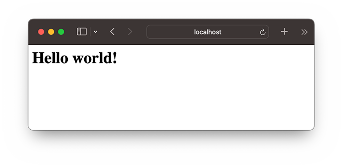
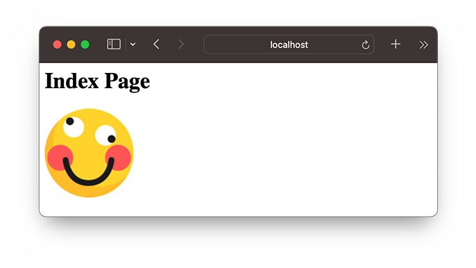

${user_name} @ ${created_at} ${delete_action}
${content}
${comment_replies}
${comment_action}
${comment_reply_form}
../git/BEFORE.md
Node.js开发的目的就是为了用JavaScript编写Web服务器程序。因为JavaScript实际上已经统治了浏览器端的脚本，其优势就是有世界上数量最多的前端开发人员。如果已经掌握了JavaScript前端开发，再学习一下如何将JavaScript应用在后端开发，就是名副其实的全栈了。
要理解Web服务器程序的工作原理，首先，我们要对HTTP协议有基本的了解。如果你对HTTP协议不太熟悉，先看一看HTTP协议简介。
要开发HTTP服务器程序，从头处理TCP连接，解析HTTP是不现实的。这些工作实际上已经由Node.js自带的http模块完成了。应用程序并不直接和HTTP协议打交道，而是操作http模块提供的request和response对象。
request对象封装了HTTP请求，我们调用request对象的属性和方法就可以拿到所有HTTP请求的信息；
response对象封装了HTTP响应，我们操作response对象的方法，就可以把HTTP响应返回给浏览器。
用Node.js实现一个HTTP服务器程序非常简单。我们来实现一个最简单的Web程序hello.js，它对于所有请求，都返回Hello world!：
// 导入http模块:
import http from 'node:http';
// 创建http server，并传入回调函数:
const server = http.createServer((request, response) => {
// 回调函数接收request和response对象,
// 获得HTTP请求的method和url:
console.log(request.method + ': ' + request.url);
// 将HTTP响应200写入response, 同时设置Content-Type: text/html:
response.writeHead(200, {'Content-Type': 'text/html'});
// 将HTTP响应的HTML内容写入response:
response.end('<h1>Hello world!</h1>');
});
// 出错时返回400:
server.on('clientError', (err, socket) => {
socket.end('HTTP/1.1 400 Bad Request\r\n\r\n');
});
// 让服务器监听8080端口:
server.listen(8080);
console.log('Server is running at http://127.0.0.1:8080/');
在命令提示符下运行该程序，可以看到以下输出：
$ node simple-server.mjs
Server is running at http://127.0.0.1:8080/
不要关闭命令提示符，直接打开浏览器输入http://localhost:8080，即可看到服务器响应的内容：

同时，在命令提示符窗口，可以看到程序打印的请求信息：
GET: /
GET: /favicon.ico
这就是我们编写的第一个HTTP服务器程序！
让我们继续扩展一下上面的Web程序。我们可以设定一个目录，然后让Web程序变成一个文件服务器。要实现这一点，我们只需要解析request.url中的路径，然后在本地找到对应的文件，把文件内容发送出去就可以了。
观察打印的request.url，它实际上是浏览器请求的路径和参数，如：
//index.html/hello?name=bob解析出path部分可以直接用URL对象：
let url = new URL('http://localost' + '/index.html?v=1');
let pathname = url.pathname;
console.log(pathname); // index.html
处理本地文件目录需要使用Node.js提供的path模块，它可以方便地构造目录：
import path from 'node:path';
// 解析当前目录:
let workDir = path.resolve('.'); // '/Users/michael'
// 组合完整的文件路径:当前目录+'pub'+'index.html':
let filePath = path.join(workDir, 'pub', 'index.html');
// '/Users/michael/pub/index.html'
使用path模块可以正确处理操作系统相关的文件路径。在Windows系统下，返回的路径类似于C:\Users\michael\static\index.html，这样，我们就不关心怎么拼接路径了。
最后，我们实现一个文件服务器simple-file-server.js：
// 导入http模块:
import http from 'node:http';
import path from 'node:path';
import { createReadStream } from 'node:fs';
import { stat } from 'node:fs/promises';
// 设定www根目录为当前目录:
const wwwRoot = path.resolve('.');
console.log(`set www root: ${wwwRoot}`);
// 根据扩展名确定MIME类型:
function guessMime(pathname) {
// FIXME:
return 'text/html';
}
// 创建http file server，并传入回调函数:
const server = http.createServer((request, response) => {
// 获得HTTP请求的method和url:
console.log(request.method + ': ' + request.url);
if (request.method !== 'GET') {
response.writeHead(400, { 'Content-Type': 'text/html' });
response.end('<h1>400 Bad Request</h1>');
} else {
// 解析path:
let url = new URL(`http://localhost${request.url}`);
let pathname = url.pathname;
let filepath = path.join(wwwRoot, pathname);
// TODO: 必要的安全检查
// 检查文件状态:
stat(filepath).then(st => {
if (st.isFile()) {
console.log('200 OK');
// 发送200响应:
response.writeHead(200, { 'Content-Type': guessMime(pathname) });
// 将文件流导向response:
createReadStream(filepath).pipe(response);
} else {
console.log('404 Not Found');
response.writeHead(404, { 'Content-Type': 'text/html' });
response.end('<h1>404 Not Found</h1>');
}
}).catch(err => {
console.log('404 Not Found');
response.writeHead(404, { 'Content-Type': 'text/html' });
response.end('<h1>404 Not Found</h1>');
});
}
});
// 出错时返回400:
server.on('clientError', (err, socket) => {
socket.end('HTTP/1.1 400 Bad Request\r\n\r\n');
});
// 让服务器监听8080端口:
server.listen(8080);
console.log('Server is running at http://127.0.0.1:8080/');
没有必要手动读取文件内容。由于response对象本身是一个Writable Stream，直接用pipe()方法就实现了自动读取文件内容并输出到HTTP响应。
在命令行运行node simple-file-server.mjs，然后在浏览器中输入http://localhost:8080/index.html：

只要当前目录下存在文件index.html，服务器就可以把文件内容发送给浏览器。观察控制台输出：
GET: /index.html
200 OK
GET: /next/hello.png
200 OK
GET: /favicon.ico
200 OK
第一个请求是浏览器请求/页面，后续请求是浏览器解析HTML后发送的其它资源请求。
在浏览器输入http://localhost:8080/时，会返回404，原因是程序识别出HTTP请求的不是文件，而是目录。请修改simple-file-server.mjs，如果遇到请求的路径是目录，则自动在目录下依次搜索index.html、default.html，如果找到了，就返回HTML文件的内容。